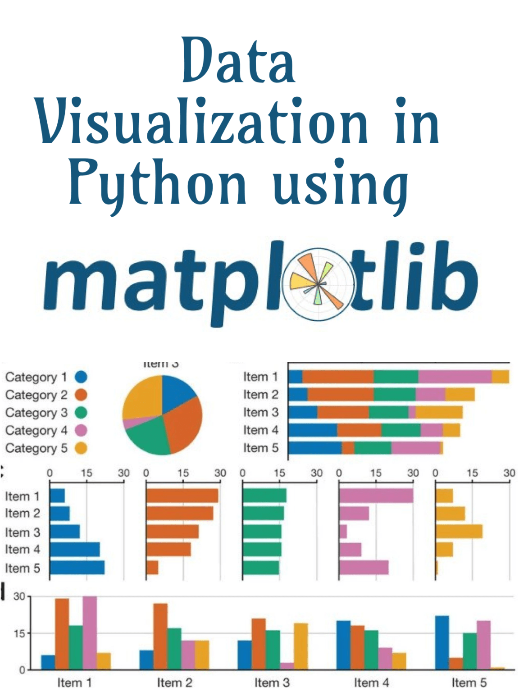

1. Dominando la Visualización de Datos con Matplotlib¶
{kind=link}
1.1. Introducción¶
Esta serie de conferencias se enfoca en dominar Matplotlib, una de las bibliotecas más populares en Python para la visualización de datos. Exploraremos varias funcionalidades de Matplotlib, entendiendo cómo crear una amplia gama de gráficos para comunicar eficazmente los insights de los datos.
1.2. Parte 1: Entendiendo los Fundamentos de Matplotlib¶
1.2.1. Descripción General¶
Matplotlib es una biblioteca integral para crear visualizaciones estáticas, animadas e interactivas en Python. Proporciona una interfaz de bajo nivel para crear una variedad de gráficos, dándote control total sobre cada aspecto de la figura.
1.2.3. Importando Matplotlib¶
Importa Matplotlib en tu script de Python:
import matplotlib.pyplot as plt
1.2.4. Creando Gráficos Básicos¶
Gráfico de Líneas:
# Datos de Ejemplo
x = [1, 2, 3, 4, 5]
y = [10, 20, 25, 30, 35]
# Gráfico
plt.plot(x, y)
plt.title('Ejemplo de Gráfico de Líneas')
plt.xlabel('Eje X')
plt.ylabel('Eje Y')
plt.show()
Gráfico de Barras:
# Datos de Ejemplo
categorías = ['A', 'B', 'C', 'D']
valores = [4, 7, 1, 8]
# Gráfico
plt.bar(categorías, valores)
plt.title('Ejemplo de Gráfico de Barras')
plt.xlabel('Categorías')
plt.ylabel('Valores')
plt.show()
Gráfico de Dispersión:
# Datos de Ejemplo
x = [5, 7, 8, 7, 2, 17, 2, 9, 4, 11, 12, 9, 6]
y = [99, 86, 87, 88, 100, 86, 103, 87, 94, 78, 77, 85, 86]
# Gráfico
plt.scatter(x, y)
plt.title('Ejemplo de Gráfico de Dispersión')
plt.xlabel('Eje X')
plt.ylabel('Eje Y')
plt.show()
1.3. Parte 2: Técnicas Avanzadas de Graficación¶
1.3.1. Histogramas¶
Histograma:
# Datos de Ejemplo
datos = [1, 2, 2, 3, 3, 3, 4, 4, 4, 4]
# Gráfico
plt.hist(datos, bins=4)
plt.title('Ejemplo de Histograma')
plt.xlabel('Intervalos de Datos')
plt.ylabel('Frecuencia')
plt.show()
1.3.2. Gráficos de Caja¶
Gráfico de Caja:
# Datos de Ejemplo
datos = [1, 2, 3, 4, 5, 6, 7, 8, 9, 10]
# Gráfico
plt.boxplot(datos)
plt.title('Ejemplo de Gráfico de Caja')
plt.ylabel('Valores')
plt.show()
1.3.3. Gráficos de Pastel¶
Gráfico de Pastel:
# Datos de Ejemplo
etiquetas = 'A', 'B', 'C', 'D'
tamaños = [15, 30, 45, 10]
colores = ['gold', 'yellowgreen', 'lightcoral', 'lightskyblue']
# Gráfico
plt.pie(tamaños, labels=etiquetas, colors=colores, autopct='%1.1f%%', startangle=140)
plt.title('Ejemplo de Gráfico de Pastel')
plt.show()
1.4. Parte 3: Personalización de Gráficos¶
1.4.1. Añadiendo Cuadrícula¶
Añadir cuadrícula a tu gráfico:
plt.plot(x, y)
plt.grid(True)
plt.show()
1.4.2. Cambiando Estilos y Colores de Línea¶
Cambiar estilo y color de línea:
plt.plot(x, y, linestyle='--', color='r')
plt.show()
1.4.3. Añadiendo Anotaciones¶
Añadir anotaciones a tu gráfico:
plt.plot(x, y)
plt.annotate('Punto más Alto', xy=(4, 30), xytext=(3, 35),
arrowprops=dict(facecolor='black', shrink=0.05))
plt.show()
1.5. Parte 4: Aplicaciones y Estudios de Caso en el Mundo Real¶
1.5.1. Análisis de Datos de Salud¶
Visualizar tiempos de espera de pacientes usando histogramas.
Analizar distribución de servicios con gráficos de barras.
1.5.2. Análisis de Datos Financieros¶
Visualizar tendencias del mercado de valores con gráficos de líneas.
Analizar el desempeño de la cartera usando gráficos de dispersión.
1.5.3. Análisis de Datos de Redes Sociales¶
Realizar análisis de sentimiento con gráficos de barras.
Detectar tendencias usando visualizaciones de series temporales.
1.6. Parte 5: Mejores Prácticas para la Visualización de Datos¶
1.6.1. Claridad¶
Asegúrate de que tu visualización sea fácil de entender.
1.6.2. Precisión¶
Representa los datos con precisión sin inducir a error.
1.6.3. Estética¶
Usa color y diseño de manera efectiva, pero evita complicar demasiado.
1.6.4. Contexto¶
Proporciona contexto con títulos, etiquetas y leyendas.
1.7. Parte 6: Ejemplo¶
Aquí hay un ejemplo de visualización de datos de ventas usando Matplotlib. El ejemplo usa datos de ventas de un archivo CSV y luego los visualiza usando varios tipos de gráficos.